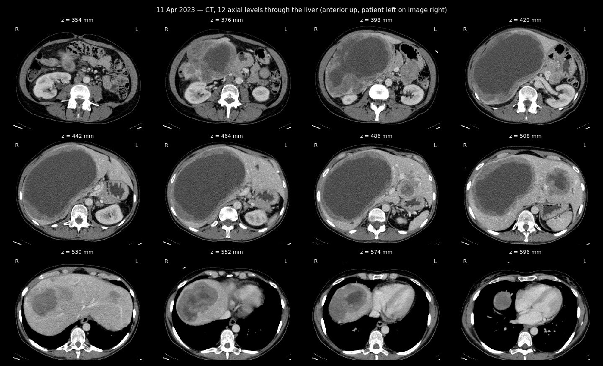
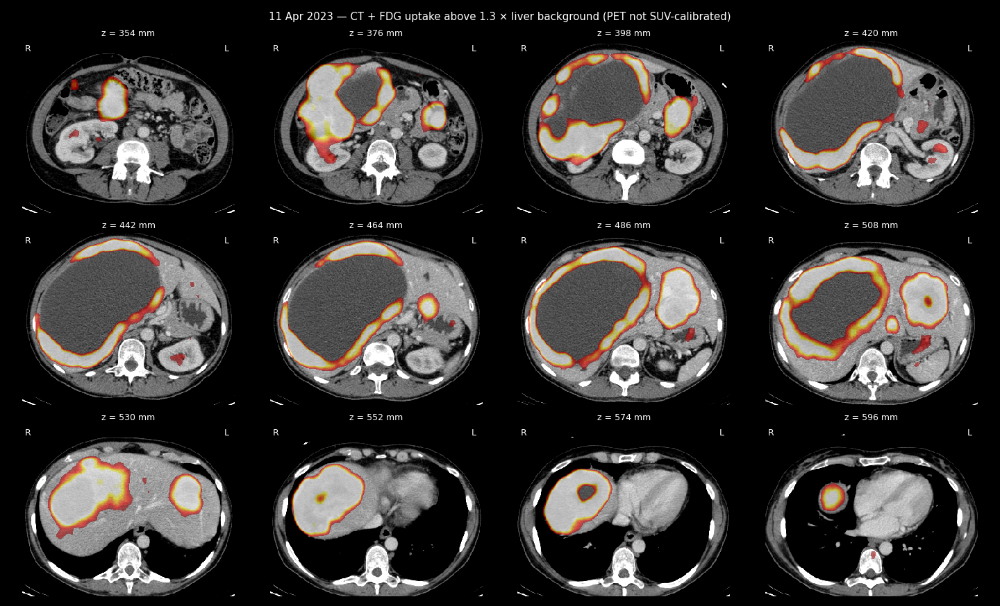

PET-CT revision — second medical opinion
PET-CT of 11 Apr 2023 — images from the study
CT sheet, 12 levels through the liver

CT + FDG uptake sheet

PET-CT study with FDG contrast enhancement
Second medical opinion
Patient’s name: Zherlitsyna Anastasia
Date of birth: 25/04/1976
The reason for the referral: apparently, we are talking about metastatic uterine leiomyosarcoma. Chemotherapy.
Research Date: 11/04/2023.
Methodology: the study was performed after intravenous injection, without oral measurement of the contrast agent.
Comparison with previous studies: CT scan of the chest, abdomen and pelvis from 23/08/2022.
Description of observations:
Head and neck:
The head has been partially explored.
As is known, the evaluation of the brain parenchyma in this study is limited. As far as can be judged, without visible pathologies.
Asymmetric accumulation of contrast in the oropharyngeal region on the left is determined, apparently due to inflammatory changes.
No signs of hypermetabolic lymphadenopathy in the neck.
Thyroid gland: the size is within the normal range, the texture is homogeneous, without pathological accumulation of contrast.
Thorax:
No pathological accumulation of contrast in the lung parenchyma. In the lungs, several small nodules are determined, for example, in the upper lobe of the right lung and in the lingula of the lungs. There are no changes in the observational data, they are all outside the PET resolution.
No pleural effusions.
The minimum pericardial effusion is determined.
Without pathological accumulation of contrast in the lymph nodes of the mediastinum and hilum of the lungs. Without pathological accumulation of contrast in the parenchyma of the mammary glands.
No pathological accumulation of contrast in the axillary lymph nodes.
A Port-A-Cath venous catheter is observed in the right armpit, its edge in the SVC.
Abdomen and pelvis:
Liver: pathological accumulation of contrast in numerous formations in both lobes is determined. The largest of them occupies almost the entire right lobe, its size slightly increased compared to the previous study. All formations are heterogeneous, some of them are lobular, some merge together. In large formations, there is a low accumulation of contrast in necrotic components and a strong accumulation of contrast in solid ones. For example, a large formation of the right lobe increased from 16 x 11 x 15 (length) cm to 20 x 12 x 17 (length) cm. The formation of the liver dome increased from 6 x 8 cm to 7 x 10 cm. The formation of the caudate lobe increased from 1.5 to 1.7 cm, left lobe - from 6 x 4.5 to 8 x 6 cm.
Between the stomach and the tail of the pancreas, a formation with a pathological accumulation of contrast, similar to liver formations, is determined. Its dimensions decreased from 4.7 x 6.5 x 7 (length) cm to 4.5 x 5.7 x 5.7 (length) cm. Its source is unclear, possibly the stomach wall. There is no obvious plane of separation between the mass and the pancreas. Education concerns the left kidney.
Gallbladder: not enlarged. The intrahepatic bile ducts are dilated. Spleen: dimensions within the normal range, without pathological accumulation of contrast. Pathological accumulation of contrast in the pancreatic parenchyma was not observed.
Right adrenal gland: pushed aside by the liver, without formations, without pathological accumulation of contrast.
Left adrenal gland: thickened, without pathological accumulation of contrast, without changes. Kidneys: no hydronephrosis or calcified stones.
No signs of hypermetabolic lymphadenopathy of the abdomen, retroperitoneum, or pelvis.
No pathological accumulation of contrast in the inguinal lymph nodes.
Bladder: no pathologies.
Intestinal loops: no pathology, as far as can be seen.
Uterus: heterogeneous lobular formations that merge together. The total size in the axial plane is 6 x 10 cm. The more cranial masses contain calcifications - the picture is similar to the previous study. In formations easy accumulation of contrast is noted.
In addition, in the lateral aspect on the right, there is a rounded formation with clear boundaries, about 6 cm in diameter, without contrast accumulation, about 50 HU (venous phase). Perhaps it is a fibroid or a hemorrhagic ovarian cyst. No significant changes in the size of the observational data.
Bone tissue:
No focal accumulation of contrast or destructive processes in the scanned area.
A somewhat uneven accumulation of contrast in the thoracic spine is determined.
Conclusion:
There is a strong pathological accumulation of contrast in the extensive bilobular liver lesion. Compared to the previous study, there is a slight deterioration.
There is a strong accumulation of contrast in the formation between the tail of the pancreas and the stomach (its source is unclear) - the size has slightly decreased. In the formations of the uterus, only a slight accumulation of FDG is determined, their size has not changed.
The possibility of further examination with the performance of a histological examination of specimens of formations should be considered.
Several small pulmonary nodules - no changes.
The rest of the observations are as above.
Best regards,
Dr. Victoria Kulikov Nuclear Medicine Specialist License No: 84847
Specialist License No: 131252
19/04/2023